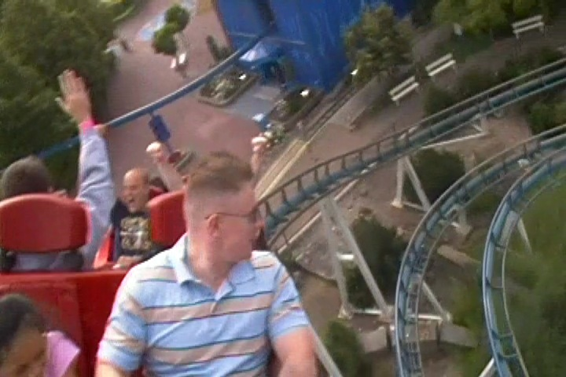

| |
Euro Mir Review

We're here at Europa Park to ride Euro Mir, perhaps one of the strangest and most f*cked up coasters on the planet. Seriously, I can not think of any other coaster like Euro Mir. I know it's what launched the Mack Spinning Coasters. But I can tell you right now. This is not ANYTHING like the other Mack Spinners I've ridden. In fact, I honestly don't think it's like ANY spinning coaster. Hell, half the time I forget that it's even a spinning coaster. I constantly say that Winjas is my favorite spinning coaster. But then I remember this ride, and crap! Turns out that Euro Mir is my favorite spinning coaster, maybe. Hell, I'm still not sure I could classify it as one, because it doesn't really spin. I mean, yeah. It spins, but it doesn't free spin. It spins in the same way that X2 flips. Yeah, it does it. But it's predictable and the same everytime. X2 doesn't flip at random like a Zac Spin, nor does Euro Mir spin like a spinning coaster. And honestly, there's just so much to Euro Mir outside the spinning/rotating that we should just start talking about the actual ride itself, or else we're going to be here all day. Once you get in the seat, you pull down the lap bar, buckle the seat, and we're off! And honestly, it's kind of like a dark ride at this part. We go by some pretty flashing lights, but for now, we're pretty much left in the dark as to what the hell is going on over here. We then enter a room where we see a glass ball and some lights cause apparently, we're in outer space now. We're rotating so we get a good look at our rider neighbors, who are probably of no help to us as for figuring out what the hell is going on over here. And yeah, we pass by some astronauts. But unfortunetly, we can't communicate with them, so we have no idea what will be happening now. Wait, is this even a roller coaster? I have no idea what the flying hell this is...great. Now we stopped. What's going to happen now? All right. We start moving, we see some flashing lights, this stuff up above us, and then...it begins. The song. Yes, Euro Mir has without a doubt the best and catchiest theme song of ALL TIME!!! No, I'm dead serious. I F*CKING LOVE THE EURO MIR SONG!!! It doesn't even have any lyrics, aside from a little bit of dialogue in German that I can't understand. But that's not what the song is about. The hook is completely instrumental and it is just CATCHY AS F*CK!!! Da-Da-Da-Da-Da!! Da-Da-Da-Da!!! Ok, my attempts at typing the lyrics fail because...you can't type out a beat. Especially not one as catchy as that. And you can't hear my voice capture the tune. Yeah, I could type it out as sheet music, but I'm lazy. So, just watch the video and then download the song. It really is a great song. And not just for a theme park song. It's just a great song overall. I know I have a lot of Theme Park music on my Ipod, including this gem. But this is just great. It's up there as one of the most played songs in my Itunes Library, I run to it, I put it on my Travel Playlist of my favorite songs that I just want to listen to while I'm driving (though to be fair, the Rainbow Magicland Theme Song and Helix Theme Song are there as well, but the Euro Mir one is my favorite of the three), and it may possibly be my favorite instrumental techno song. It's definetly up there. And speaking of that, this ride has a very long lifthill as we just spiral up, never really getting the sense of rising. But screw it!! We're here to have fun. That means one thing. DANCE PARTY!!!! We dance and sing and clap as the lights flash around us and the track swirls above us as we rotate and rise up and up into the sky. Towards the top of the lifthill, we see some astronauts. Hey!! Join the party!! We need more people dancing to the Euro Mir Song!!! Da-Da-Da-Da-Da!!!! After over 2 minutes of lifthill climbing and dancing and partying, we finally make it outside, and see a bunch of mirrors. So yeah. Now we see our own reflections, and we react much like a child discovering their own reflection for the first time. We wave to ourselves and make silly faces before we rotate and see the look of our neighbors, horrified by our dance party, techno music, and silly mirror faces. We get a view of some farmland, Silver Star, and Blue Fire, before rotating back and seeing the mirrors again. Hey look!! It's you again!! Wave hello at yourself again you narcassist!! =) We begin rotating as we notice ourselves atop the big mirror towers, looking down at all the beauty and awesomeness that make up Europa Park. And we're just sort of meandering, like a wild mouse, only without the crazy insane laterals. Strange, but I like it. It's all very pleasent and calm. But hold on. That's about to change as now we're finally going to head on down the first drop. Oh wait. This is a roller coaster. We've been on this ride for over three minutes and not only have we not begun the actual roller coaster portion of the ride, but we've been having so much fun. Seriously, I'd be satisfied with this just being the ride. But anyways, there's more. Let's have some fun!! =) We go down the curved first drop and DAMN!!! We catch some SPEED!!! We are going fast. We then head up a big hill, heading back up towards the mirror towers. We reach the top, and though we don't get any airtime, we do begin to rotate. If we went down the first drop forewards, then now we're backwards and facing our neighbors and vice versa. We head down another drop and turn. This isn't crazy, but it's still fun. I'm enjoying all these turns by the mirrors. I'm enjoying the ride. We go through a couple more tight turns before heading in a midcourse brakes. We then glide down that through a downward helix and now things are getting fast again. There's some whip to these turns and DAMN!! We are FLYING!! We head down another sort of downward helix, gaining more speed as we fly through the mirror tower as we TAKE THE TUNNEL!! We exit out, go through more crazy turns, TAKE THE TUNNEL AGAIN!!!!, and really get whipped around to the ground before we slam into the brake run. HOLY CRAP!!! I LOVE THIS RIDE!!! I F*CKING LOVE EURO MIR!!!! And it's not so much for the actual ride itself, though I do love the whip it has at the end. What really makes Euro Mir so great, is that it's just...an experience. There aren't many coasters out there like Euro Mir. There's nothing like it. And it's just fun. The mirrors, the music, the dancing, the novelty, it's just so weird and surreal to check out. It's definetly my favorite coaster at Europa Park (Yes, I like this ride better than the B&M Hyper, GCI Woodie, or the Mack Launched Looper) and honestly, while it's not one of my Top 10 Coasters, it's up there. It's really up there. Possibly Top 25, which for someone who's been on nearly 500 coasters, is an impressive feat. So definetly check out Euro Mir. It's fun, it's unique, and it's just...Just ride it. You will have a blast.
9/10
Location: Europa Park
Opened: 1997
Built by: Mack
Last Ridden: June 26, 2012
Euro Mir Photos



|